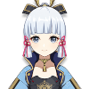

Cryo
Aloy
She is the heroine from Horizon Zero Dawn and is introduced as a collaboration and crossover character between Guerrilla Games and miHoYo.

Chongyun
An exorcist from Liyue, Chongyun was born with excessive yang (positive) energy, which has proven to be both a help and a hindrance. It makes him a very effective exorcist, but it also means he has never seen a spirit for himself — they flee before he can even lay eyes on them. It has also made him particularly susceptible to any kind of heat or strong emotion, which leads to some rather... unexpected results.

Diona
Despite being a bartender at Cat's Tail, she actually despises alcohol and wants nothing more than to ruin Mondstadt's wine industry—a feat easier said than done when her patrons absolutely love her drinks. She is the daughter of Draff, a hunter in Springvale.
Eula
A descendant of the infamous and tyrannical Lawrence Clan and niece of Schubert, Eula is the captain of the Reconnaissance Company with the Knights of Favonius.

Ganyu
She serves as an emissary and secretary for the Liyue Qixing.⠀⠀⠀⠀⠀⠀⠀⠀⠀⠀⠀⠀⠀⠀⠀⠀⠀⠀⠀⠀⠀⠀⠀⠀⠀⠀⠀⠀⠀⠀⠀⠀⠀⠀⠀⠀⠀⠀⠀
Kaeya
Kaeya is the Cavalry Captain of the Knights of Favonius. He is held in high regard by the people of Mondstadt — even with all his eccentricities and secrets.

Kamisato Ayaka
She is the eldest daughter of the Kamisato Clan and sister of Kamisato Ayato. Being beautiful, elegant, and graceful, the common folk have nothing to bad-mouth Ayaka about. Because of her social status as the eldest daughter of the Kamisato Clan of the Yashiro Commission and as the Shirasagi Himegimi, Ayaka is seen as a model of perfection.
Qiqi
Resurrected as a zombie by the adepti, she has ended up in Baizhu's care and now works at Bubu Pharmacy in Liyue Harbor.⠀⠀⠀
Rosaria
She is a member of the Church of Favonius in Mondstadt.⠀⠀⠀⠀⠀⠀⠀⠀⠀⠀⠀⠀⠀⠀⠀⠀⠀⠀⠀⠀⠀⠀⠀⠀⠀⠀⠀⠀⠀⠀⠀⠀⠀⠀⠀⠀⠀⠀⠀⠀